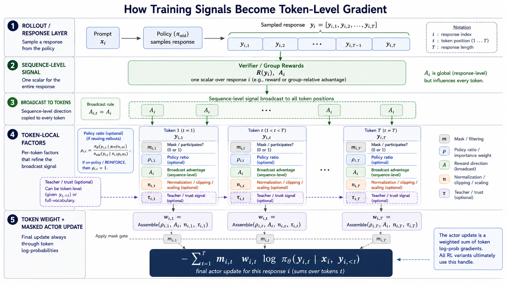
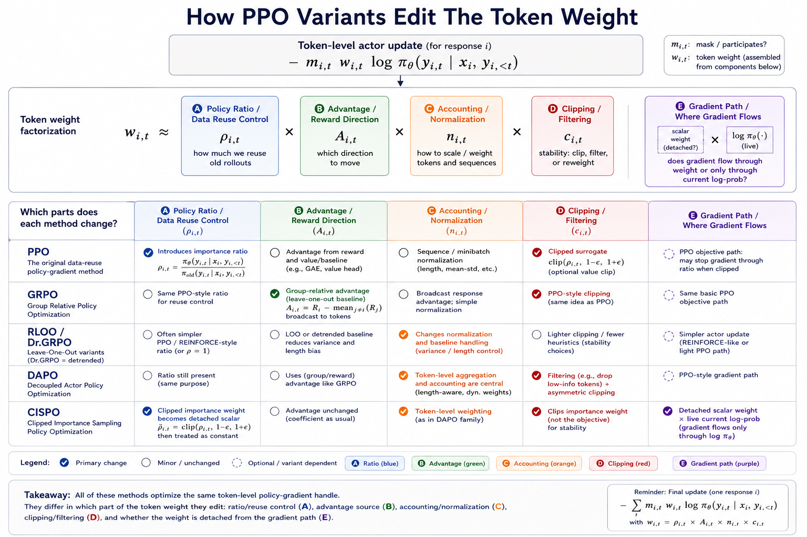

Every Token Gets a Weight
From PPO to OPSD in LLM Reinforcement Learning
1 Introduction: The Small Object That Moves The Model
When people describe reinforcement learning for language models, they usually talk about rewards: did the answer pass the tests, solve the math problem, follow the instruction, or satisfy the verifier?
But inside the actor update, the thing that actually touches the model is smaller and more mechanical. It is usually a token log-probability multiplied by some weight.
For a sampled response \(y_i=(y_{i,1},\ldots,y_{i,T})\), the trainable handle is:
\[ \log \pi_\theta(y_{i,t}\mid x_i,y_{i,<t}). \tag{1}\]
This should feel familiar from supervised fine-tuning. In SFT, we take a human or synthetic demonstration \(y_i^\star\) and minimize:
\[ \mathcal L_{\text{SFT}} = -\sum_{i,t} m_{i,t} \log \pi_\theta(y_{i,t}^\star\mid x_i,y_{i,<t}^\star). \tag{2}\]
Every supervised token is treated as a positive target. The response mask \(m_{i,t}\) decides which positions participate, and the implicit weight on participating tokens is just \(1\).
RL-style actor training keeps the same trainable handle, but changes where the tokens come from and how strongly each token counts. The response is sampled from the current or recent policy, and the token log-prob is multiplied by a reward-, ratio-, or teacher-derived coefficient:
\[ \mathcal L_{\text{actor}} = -\sum_{i,t} m_{i,t} w_{i,t} \log \pi_\theta(y_{i,t}\mid x_i,y_{i,<t}). \tag{3}\]
Here \(m_{i,t}\) says whether the token participates at all, and \(w_{i,t}\) says how much the token counts. This post is about the construction of that weight.
PPO [2], GRPO [4,6], DAPO [8], CISPO [9,26], SDPO [11], SRPO [12], and RLSD [13] can all be read as different answers to the same question:
For this sampled token, how much should the gradient count?
That does not mean these methods are mathematically identical. In particular, distillation losses and advantage-weighted policy-gradient losses can expose similar-looking terms while having different fixed points and stability behavior. The point of the token-weighting view is not to collapse every objective into one formula. It is to track what multiplies the model’s token-level update, and why.
2 Every Token Gets A Weight
The main thesis of this post is simple:
Modern LLM RL is increasingly about deciding which sampled tokens deserve gradient, in which direction, and under which correction or trust weight.
The subtle part is that the final gradient is token-level even when the signal that created it is not.
Suppose a model samples one response for a math problem. The verifier gives one sequence-level reward: correct or incorrect. GRPO may turn that into one group-relative advantage for the whole response. PPO may add a different probability ratio for each token. A mask may remove the prompt tokens or invalid positions. A normalization rule may decide whether long answers get more total weight than short ones. A teacher method may add dense information at some positions but not others.
By the time the actor update reaches the model, all of those decisions have to meet at the same place:
\[ \log \pi_\theta(y_{i,t}\mid x_i,y_{i,<t}). \]
That is the reason I like the token-weighting lens. It lets us ask how a sequence-level judgment becomes a token-level push.
A useful schematic is:
\[ w_{i,t} \approx \text{policy-ratio control} \times \text{reward advantage} \times \text{normalization} \times \text{teacher or trust gate}. \tag{4}\]
This is not meant to be a universal formula. It is a way to keep track of where the pressure on a token comes from.
Some factors are genuinely token-level. The PPO ratio \(\rho_{i,t}\) compares the current and old policy on the particular token \(y_{i,t}\) under the particular prefix \(y_{i,<t}\). A token mask \(m_{i,t}\) may include one position and remove the next. A teacher gap can say that the privileged teacher liked one local token choice but disliked another.
Other factors begin at the sequence level and then get broadcast across tokens. A binary verifier reward says something about the whole answer, not the exact step where the reasoning went right or wrong. GRPO’s group-relative advantage \(\hat A_i\) is also response-level. In the simplest implementation, every token in response \(i\) inherits the same direction:
\[ \hat A_{i,t}=\hat A_i. \tag{5}\]
That broadcast is powerful but blunt. It is why long reasoning RL can work at all with sparse rewards, and also why local credit assignment is hard: the update treats the correct algebra step and the accidental detour as having the same sequence-level sign unless another mechanism intervenes.
The later components refine that blunt signal. Normalization changes how much total weight a response contributes. Clipping decides when a reused token has already moved far enough. Filtering removes samples or tokens that would make the update noisy. Teacher signals try to add local information, but then need trust gates because dense does not automatically mean correct.
The figure below shows this compilation for one sampled response \(i\). A real training batch repeats the same construction over many responses, adding the outer sum over \(i\).

So the story is not that every method literally multiplies four scalars. The story is that every method must eventually answer the same engineering question for each token position:
How much should this token’s log-probability update count, and why?
SFT is the clean base case: target tokens participate with weight \(1\). REINFORCE adds a reward or advantage weight to sampled tokens [1,3]. PPO keeps the advantage but adds a data-reuse ratio [2]. GRPO changes where the advantage comes from [4,6]. DAPO and CISPO change token accounting, filtering, clipping, and the gradient path [8,9,26]. SDPO, SRPO, and RLSD add teacher-derived information, sometimes as a scalar weight and sometimes as a full distributional loss [11,12,13].
3 How The RL Update Works
Before comparing PPO, GRPO, DAPO, and teacher-weighted variants, it is worth slowing down on the basic policy-gradient move. This is the part that is easy to forget because the implementation looks like “just another loss,” but the logic is different from SFT.
3.1 From Reward To Loss
In SFT, the data tells us the target token. In RL, the model first samples an answer, and the environment or verifier tells us whether that answer was useful. So the original objective is not “match this label.” It is:
\[ J(\theta) = \mathbb E_{y\sim \pi_\theta} \left[ R(y) \right]. \tag{6}\]
In words: if we sample from the current policy, we want the average reward of those samples to go up.
The awkward part is that the sample itself comes from the model. When \(\theta\) changes, both the probability of the sampled answer and the distribution of future samples change. The policy-gradient trick gives us a usable direction [1]:
\[ \nabla_\theta J(\theta) = \mathbb E_{y\sim \pi_\theta} \left[ R(y)\nabla_\theta \log \pi_\theta(y) \right]. \tag{7}\]
This says something very practical. If a sampled response has high reward, increase the log-probability of that response. If it has low reward relative to a baseline, decrease it.
For a language model, a response probability is a product of token probabilities, so the log-probability is a sum:
\[ \log \pi_\theta(y) = \sum_t \log \pi_\theta(y_t\mid x,y_{<t}). \tag{8}\]
That is why the sequence-level reward becomes a token-level update:
\[ \nabla_\theta J(\theta) = \mathbb E \left[ \sum_t R(y) \nabla_\theta \log \pi_\theta(y_t\mid x,y_{<t}) \right]. \tag{9}\]
This equation is the seed of the whole post. Reinforcement learning for LLMs starts as reward-weighted learning on the model’s own sampled tokens. The reward is usually sequence-level, but the trainable handle is still token-level.
In practice, we usually replace raw reward with an advantage estimate \(\hat A\). The advantage means “better or worse than expected,” not just “good or bad in absolute terms.” The common REINFORCE-style loss is:
\[ \mathcal L_{\text{RF}} = -\hat A \sum_t \log \pi_\theta(y_t\mid x,y_{<t}). \tag{10}\]
Here \(\hat A\) should be read as a fixed coefficient for the actor update. In autodiff code, that usually means detaching the advantage before multiplying it by the log-prob. Gradients should flow through the token log-probs, not back through the reward or advantage computation. If \(\hat A>0\), gradient descent increases the sampled token log-probs. If \(\hat A<0\), gradient descent decreases them.
This is also why actor loss values can feel strange in real training. The loss is a surrogate used to produce the right gradient direction. Its numeric value is often less meaningful than the reward curve, KL, entropy, ratio statistics, clip fraction, and evaluation metrics.
3.2 What PPO Adds
The REINFORCE-style loss in Equation 10 is the clean base case: sample from the current policy, compute a reward or advantage, and push the sampled token log-probs up or down [3].
If we generated fresh samples after every optimizer step, this would stay conceptually simple. The data would always come from the same policy we are updating. But for LLMs, generating and scoring long rollouts is expensive. PPO is the practical compromise: collect a rollout batch once, then reuse that batch for several actor updates [2,10].
A PPO rollout batch is a temporary dataset produced by a frozen snapshot of the actor, usually called \(\pi_{\text{old}}\). For each prompt, the rollout engine stores something like:
- the prompt \(x\);
- the sampled token sequence \(y=(y_1,\ldots,y_T)\);
- the reward or advantage estimate;
- the mask saying which tokens count;
- the old log-prob \(\log \pi_{\text{old}}(y_t\mid x,y_{<t})\) for each sampled token.
Reusing the rollout does not mean asking the model to generate the same answer again. It means feeding the same prompt and sampled token IDs back through the current training model, usually with teacher forcing, and recomputing the current log-probs:
\[ \log \pi_\theta(y_t\mid x,y_{<t}). \tag{11}\]
So during the reuse window, the text is fixed, but the model scoring that text is changing.
During this inner optimization loop, three things stay fixed: the sampled text, the reward or advantage, and the old log-prob. What changes is the current model’s probability for those already-sampled tokens.
After the first optimizer step, the trainable policy is no longer exactly the policy that generated the tokens:
\[ \pi_\theta \ne \pi_{\text{old}}. \tag{12}\]
This is the “slightly off-policy” part [10]. The data was sampled by \(\pi_{\text{old}}\), but the update is being applied to \(\pi_\theta\). PPO’s first addition to REINFORCE is a token-level importance ratio:
\[ \rho_t(\theta) = \frac{ \pi_\theta(y_t\mid x,y_{<t}) }{ \pi_{\text{old}}(y_t\mid x,y_{<t}) }. \tag{13}\]
This ratio asks: for this exact token in this exact sampled prefix, how much more or less likely is the current actor to produce it than the actor that produced the data?
PPO’s second addition is clipping. Instead of the plain REINFORCE-style log-prob loss, PPO maximizes a clipped surrogate [2]:
\[ J^{\text{PPO}}(\theta) = \mathbb E_t \left[ \min \left( \rho_t(\theta)\hat A_t, \operatorname{clip}(\rho_t(\theta),1-\epsilon,1+\epsilon)\hat A_t \right) \right]. \tag{14}\]
The actor loss is the negative:
\[ \mathcal L^{\text{PPO}} = -J^{\text{PPO}}. \tag{15}\]
The first term, \(\rho_t(\theta)\hat A_t\), is the advantage-weighted update corrected for the fact that the token came from \(\pi_{\text{old}}\). The second term is the guardrail: if the current policy has already moved too far on this token, clipping removes the incentive to keep pushing in the reward-improving direction.
That also explains why reusing the same rollout can still produce different gradients. The advantage is fixed, but \(\pi_\theta(y_t\mid x,y_{<t})\) is not fixed. After each optimizer step, the current log-prob changes, the ratio changes, and the selected branch of the PPO objective may change.
The exact clipping cases and minibatch bookkeeping are in Appendix B. The main point here is simpler:
PPO reuses exact sampled data to save rollout cost, and uses the probability ratio to keep that reuse from drifting too far away from the policy that generated the data.
This is the first major kind of token weight: not a reward weight, but a data-reuse correction weight.
4 Policy-Gradient Weights: From PPO To CISPO
The methods in this section keep the same final actor handle: a weighted token log-probability. What changes is how the scalar weight is assembled, and sometimes whether gradients flow through the scalar or only through the current log-prob.
For policy-gradient methods, I will use a slightly more explicit version of the token-weight stack:
\[ w_{i,t}^{\text{PG}} \approx \rho_{i,t} \times A_{i,t} \times n_{i,t} \times c_{i,t}. \tag{16}\]
Here \(\rho_{i,t}\) is the policy-ratio or data-reuse control, \(A_{i,t}\) is the reward direction, \(n_{i,t}\) is accounting and normalization, and \(c_{i,t}\) is clipping and filtering. The split between \(n_{i,t}\) and \(c_{i,t}\) is intentional. Accounting and normalization decide how much scale each response or token gets in the batch. Clipping and filtering decide whether a token/sample is capped, dropped, or reweighted for stability.
There is one more question that is not fully captured by the scalar factorization: the gradient path. PPO’s clipped objective can stop gradient through a clipped branch. CISPO makes this separation explicit by detaching the clipped scalar weight and keeping the current log-prob as the live gradient path [9,26].

Read the figure by columns rather than as a timeline. PPO introduces ratio-based reuse control and clipping [2]. GRPO mainly changes the advantage source [4,6]. RLOO [3], Dr. GRPO [7], and related critic-free variants change baselines and normalization choices. DAPO makes accounting and clipping/filtering central [8]. CISPO changes the scalar importance weight and, most importantly, the gradient path [9,26].
4.1 PPO: Ratio Times Advantage
The previous section introduced PPO as the first extension of REINFORCE: reuse rollout data from \(\pi_{\text{old}}\), correct with the ratio in Equation 13, and clip the surrogate in Equation 14.
In the Figure 2 notation, PPO’s signature edits are slot \(\rho_{i,t}\), the policy-ratio term, and slot \(c_{i,t}\), the clipping guard. If we temporarily ignore clipping and normalization, the core token-weight view is:
\[ w_t^{\text{PPO}} \approx \rho_t(\theta)\hat A_t, \tag{17}\]
Clipping then changes whether that reward-improving movement is still allowed. The advantage says whether the sampled action should go up or down. The ratio says how far the current policy has moved from the old policy that generated the token.
4.2 GRPO: Same Ratio, Critic-Free Advantage
GRPO keeps the PPO-style ratio but replaces the learned value-model advantage with a group-relative advantage [4,6].
For a prompt \(x\), sample \(G\) responses with rewards \(\{r_1,\ldots,r_G\}\):
\[ \hat A_i = \frac{r_i-\mu_G}{\sigma_G+\epsilon}, \qquad \mu_G = \frac{1}{G} \sum_j r_j. \tag{18}\]
The advantage is response-level, then broadcast over tokens:
\[ \hat A_{i,t} = \hat A_i. \tag{19}\]
The token weight becomes:
\[ w_{i,t}^{\text{GRPO}} \approx \rho_{i,t}(\theta)\hat A_i. \tag{20}\]
This removes the critic, but it does not solve local credit assignment. Every token in the response inherits the same group-relative reward direction. In Figure 2 terms, GRPO mainly edits slot \(A_{i,t}\) while keeping the PPO-style reuse and clipping machinery recognizable.
4.3 RLOO, Dr. GRPO, and REINFORCE++: Baselines Are Weights Too
RLOO uses the reward of other samples for the same prompt as the baseline [3]:
\[ \hat A_i = r_i - \frac{1}{K-1} \sum_{j\ne i}r_j. \tag{21}\]
Dr. GRPO removes standard-deviation normalization and changes loss normalization to reduce length bias [7]:
\[ \hat A_i = r_i-\mu_G. \tag{22}\]
REINFORCE++ and related critic-free variants argue that much of PPO’s machinery is not always necessary in LLM post-training, but advantage normalization, token accounting, and stability tricks remain central [5].
These details can look like bookkeeping. They are not. In long-form generation, dividing by sequence length, group standard deviation, or batch token count changes which prompts and tokens dominate the gradient. In Figure 2 terms, these variants mostly live in the advantage/baseline slot \(A_{i,t}\) and the accounting/normalization slot \(n_{i,t}\).
4.4 DAPO: Token Aggregation and Asymmetric Clipping
DAPO makes the token-weighting lens unavoidable. It changes not only the advantage estimator, but also how token losses are aggregated, which prompt groups are allowed to contribute, and how ratio clipping behaves [8].
Two ideas matter most for this post:
- Token-level aggregation belongs to the accounting/normalization slot \(n_{i,t}\); it keeps long responses from being systematically underweighted.
- Filtering and Clip-Higher belong to the clipping/filtering slot \(c_{i,t}\); they control which samples contribute and relax the upper ratio bound so rare but useful positive-advantage tokens are not clipped too early.
In stack form, DAPO changes both slots:
\[ w_{i,t}^{\text{DAPO}} \approx \rho_{i,t} \hat A_i \, n_{i,t}^{\text{DAPO}} \, c_{i,t}^{\text{DAPO}}. \tag{23}\]
4.5 CISPO: Clip The Weight, Keep The Gradient Path
CISPO is useful because it separates two ideas that PPO tends to fuse [9,26]:
- the scalar used to scale the update;
- the live log-prob term that receives gradient.
A simplified CISPO-style actor loss is:
\[ \mathcal L^{\text{CISPO}} = - \sum_{i,t} \operatorname{sg} \left[ \operatorname{clip} (\rho_{i,t},1-\epsilon,1+\epsilon) \hat A_{i,t} \right] \log \pi_\theta(y_{i,t}\mid x_i,y_{i,<t}). \tag{24}\]
The clipped ratio becomes a detached importance weight. The trainable path remains the current actor’s log-probability. In Figure 2 terms, CISPO touches the ratio/clipping scalar, but its most important distinction is the purple gradient-path slot: the scalar is detached, and gradients flow only through the live \(\log \pi_\theta\) term.
In plain English:
PPO says: if the ratio moved too far, stop trusting this token’s update. CISPO says: keep the update, but cap how much the ratio can scale it.
This is a useful bridge to teacher-weighting methods, because those methods also separate “where the gradient flows” from “what scalar or branch decides how much the token counts.”
5 Teacher-Augmented Weights: SDPO, SRPO, and RLSD
The previous section only used reward-derived advantages and policy-ratio control. On-policy distillation adds a new kind of signal: a teacher distribution evaluated on the student’s own rollout.
This makes the weight stack richer, but also more dangerous. A teacher can provide local credit assignment that scalar reward cannot. It can also inject style, length preference, unsupported hindsight, or behavior that the verifier does not actually want.
5.1 Loss Form vs. Advantage View
Teacher-augmented RL is easy to misread because the same method can be discussed in two different mathematical languages. One language is the loss form: optimize a distillation objective between a student distribution and a teacher distribution. The other is the advantage-style view: inspect the gradient and ask whether a teacher-induced coefficient behaves like a token-level reward or advantage.
These are two views of the update, not two interchangeable objectives.
The first form is the loss form. We define a student next-token distribution \(p_{i,t}\) and a teacher next-token distribution \(q_{i,t}\):
\[ p_{i,t}(a) = \pi_\theta(a\mid c_S,y_{i,<t}), \qquad q_{i,t}(a) = \operatorname{sg} \left[ \pi_T(a\mid c_T,y_{i,<t}) \right]. \tag{25}\]
Then a generic distillation loss is:
\[ \mathcal L_{\text{KD}} = \sum_{i,t} m_{i,t} D \left( q_{i,t} \parallel p_{i,t} \right). \tag{26}\]
For forward KL, the teacher-side entropy term is constant with respect to the student, so the student-dependent part is the cross-entropy term:
\[ \mathcal L_{\text{FKL}} = \sum_{i,t} m_{i,t} D_{\text{KL}}(q_{i,t}\parallel p_{i,t}) = \text{const} + \sum_{i,t} m_{i,t} \left[ -\sum_a q_{i,t}(a) \log p_{i,t}(a) \right]. \tag{27}\]
This is not equivalent to a sampled-token policy-gradient loss. The teacher probability \(q_{i,t}(a)\) weights every possible next token \(a\) in the vocabulary, not only the token that was sampled in the rollout. In this forward-KL form, it is better to think “soft supervised target,” not “advantage.”
The advantage-style view becomes meaningful for reverse-KL-style self-distillation, where the current student distribution is on the sampling side of the divergence. The loss is still distribution matching:
\[ \mathcal L_{\text{RKL}} = \sum_{i,t} m_{i,t} \sum_a p_{i,t}(a) \left[ \log p_{i,t}(a)-\log q_{i,t}(a) \right]. \tag{28}\]
When we inspect the negative gradient of this loss, an advantage-like coefficient appears:
\[ A_t^{\text{teacher}}(a) = \log q_t(a) - \log p_t(a). \tag{29}\]
Positive means the feedback-conditioned teacher assigns more probability to token \(a\) than the student does. Negative means the teacher assigns less. Up to constants that act like baselines, this is the term that makes reverse-KL self-distillation look policy-gradient-like.
This is the bridge: a teacher method may start as a distillation loss, while a reverse-KL gradient can be read through an advantage-like coefficient. These forms are not equivalent objectives. The advantage view is an interpretation of what the loss pushes on, and it is especially useful when comparing teacher-augmented methods to PPO or GRPO.
5.2 SDPO: Distillation Loss And Advantage View
SDPO samples a rollout, obtains feedback, reprompts the same model with that feedback as a self-teacher, and distills the feedback-conditioned teacher distribution back into the student [11].
At the loss level, SDPO uses the teacher distribution as a dense target on the student’s own trajectory:
\[ \mathcal L_{\text{SDPO}} = \sum_t m_t D_{\text{KL}} \left( p_t \parallel q_t \right) = \sum_t m_t \sum_a p_t(a) \left[ \log p_t(a)-\log q_t(a) \right]. \tag{30}\]
The teacher does not need to generate a new response. It can rescore the student’s original rollout under the richer context. This is what makes SDPO appealing: it converts sparse outcome feedback into dense token-level supervision without requiring a stronger external teacher.
At the update level, the same reverse-KL loss has a policy-gradient-like reading:
\[ -\nabla_\theta \mathcal L_{\text{SDPO}} = \sum_t m_t \mathbb E_{a\sim p_t} \left[ A_t^{\text{SDPO}}(a) \nabla_\theta \log p_t(a) \right] \tag{31}\]
where:
\[ A_t^{\text{SDPO}}(a) = \log q_t(a)-\log p_t(a). \tag{32}\]
If we project this full-vocabulary update onto the sampled token \(y_t\), the local teacher gap is:
\[ \Delta_t^{\text{SDPO}} = A_t^{\text{SDPO}}(y_t) = \log q_t(y_t)-\log p_t(y_t). \tag{33}\]
This is often the most intuitive way to compare SDPO with reward-weighted RL: the teacher gap tells us whether the feedback-conditioned model wanted the sampled token more or less than the ordinary student did. But the actual SDPO objective in Equation 30 remains a reverse-KL distillation loss, not simply PPO with \(\Delta_t^{\text{SDPO}}\) substituted for reward.
5.3 SRPO: Route Before Trusting The Teacher
SRPO observes that SDPO can be very helpful on failed samples but ambiguous or harmful on already-correct samples [12]. The fix is routing. In the language of this section, SRPO is not a third mathematical form for teacher signal. It is a denoising rule: decide when the SDPO loss should be trusted at all.
Let \(c_i\) mark whether rollout \(i\) is correct and \(m_i\) mark whether usable teacher information exists:
\[ z_i^{\text{SDPO}} = (1-c_i)m_i, \qquad z_i^{\text{GRPO}} = 1-z_i^{\text{SDPO}}. \tag{34}\]
Then the routed objective is:
\[ \mathcal L_{\text{SRPO}} = \frac{ \sum_{i,t}z_i^{\text{GRPO}}\ell_{i,t}^{\text{GRPO}} + \sum_{i,t}z_i^{\text{SDPO}}\ell_{i,t}^{\text{SDPO}} }{ \sum_{i,t}z_i^{\text{GRPO}} + \sum_{i,t}z_i^{\text{SDPO}} }. \tag{35}\]
SRPO uses the SDPO loss directly on the routed distillation branch. The next equation is not the original paper’s exact objective; it is my blog-level rewrite for the token-weighting lens. If we use the advantage-style lens only as an interpretation, the routed sampled-token signal looks like:
\[ \tilde A_{i,t}^{\text{SRPO}} = z_i^{\text{GRPO}}\hat A_i^{\text{GRPO}} + z_i^{\text{SDPO}} \Delta_{i,t}^{\text{SDPO}}. \tag{36}\]
That equation is not the training loss, and it is not an equivalence claim. It is a bookkeeping view of the update story: use reward-relative policy optimization for samples where the teacher branch is not needed, and use the SDPO teacher gap for samples where feedback-conditioned distillation is expected to help. The faithful SRPO object to keep in mind is still the routed mixture of GRPO and SDPO losses in Equation 35.
5.4 RLSD: Reward Direction, Teacher Magnitude
RLSD makes the denoising idea even sharper. Reward decides direction; the teacher-student gap only changes token-level magnitude [13].
Define a detached sampled-token gap:
\[ \Delta_{i,t} = \operatorname{sg} \left[ \log \pi_T(y_{i,t}\mid c_T,y_{i,<t}) - \log \pi_S(y_{i,t}\mid c_S,y_{i,<t}) \right]. \tag{37}\]
A simple RLSD-style multiplier is:
\[ u_{i,t} = \operatorname{clip} \left( \exp(\operatorname{sign}(\hat A_i)\Delta_{i,t}), 1-\epsilon_w, 1+\epsilon_w \right). \tag{38}\]
Then:
\[ \hat A_{i,t}^{\text{RLSD}} = \hat A_i \left[ (1-\lambda)+\lambda u_{i,t} \right]. \tag{39}\]
The effective token weight becomes:
\[ w_{i,t}^{\text{RLSD}} \approx \rho_{i,t} \hat A_i \left[ (1-\lambda)+\lambda u_{i,t} \right]. \tag{40}\]
The key point:
RLSD does not ask the teacher to decide correctness. The verifier reward decides direction. The teacher only says which tokens deserve more or less magnitude inside that direction.
So SRPO and RLSD are best read as two basic teacher-denoising moves. SRPO denoises by routing: only use the teacher branch on samples where teacher feedback is expected to help. RLSD denoises by anchoring direction: keep the verifier advantage as the sign of the update, and let the teacher only modulate strength.
6 When Should We Trust The Teacher?
Once teacher signal becomes part of the update, the next question is not simply whether the teacher is better than the student. The more useful question is local:
Should this teacher signal affect this token or sample right now?
The teacher can be right in the abstract but still noisy for the update. It may use privileged context the student will not see, change style or length rather than task behavior, give a useful sequence-level hint that is misleading at a specific token, help exploration early but become stale later, or be locally incompatible with the student’s current prefix.
A useful generic form is:
\[ \mathcal L_{\text{teacher}} = \sum_{i,t} z_{i,t} \tau_{i,t} D_{\text{teacher}}(i,t), \tag{41}\]
This equation has three knobs:
- \(z_{i,t}\) asks whether the teacher branch is active.
- \(\tau_{i,t}\) asks how strongly the teacher branch should count.
- \(D_{\text{teacher}}(i,t)\) asks what teacher signal is being trusted in the first place.
SRPO mainly edits \(z\): route the teacher branch only where it is expected to help. RLSD mainly edits \(\tau\): keep reward as the direction and let the teacher change strength. Recent OPD and OPSD papers can be read as broadening this same trust-control pattern:
| Trust Knob | Question | Representative Methods | Core Idea |
|---|---|---|---|
| Route \(z\) | Should teacher signal be used here? | SRPO [12], HERO [20], SocraticPO [18] | Use teacher help only when it is locally relevant, needed, or should receive discounted credit. |
| Weight \(\tau\) | How much should teacher signal count? | RLSD [13], SG-OPD [17] | Scale teacher guidance by reward direction or sign consistency. |
| Purify \(D_{\text{teacher}}\) | Is the teacher signal clean? | RLCSD [22], ARG-OPD [19], EDGE-OPD [27] | Remove style drift, unsupported oracle residue, or absolute privileged imitation before using the teacher gap. |
| Change signal form | Are token logits the right interface? | DistIL [15], OPRD [16] | Use forward-KL imitation, distributional DAgger, or representation alignment instead of only token-logit gaps. |
| Control context and timing | Is the teacher compatible now? | Context Returns [21], Teacher-Move Timing [14] | Check whether internalized context remains compatible, and refresh moving teachers only after consolidation. |
The common thread is that the teacher is no longer treated as uniformly correct dense supervision. In the token-weighting view, teacher trust becomes a concrete update rule: route the teacher, scale the teacher, clean the teacher signal, change its representation, or delay it until the student is ready.
7 Conclusion: The Weight Is The Interface
The easiest way to tell the story of LLM RL is to start with rewards. The more useful way to debug and compare training methods is to ask what finally multiplies each token’s log-probability.
That weight is not one thing. In PPO, part of it is a reuse correction: the token came from an older policy, so the current policy needs a ratio and a clip. In GRPO and related critic-free methods, part of it is a response-level advantage broadcast across tokens. In DAPO and CISPO, part of it is accounting, filtering, clipping, and gradient-path design. In SDPO, SRPO, and RLSD, part of it comes from a teacher signal, but the teacher does not always enter in the same mathematical form.
This is the main lesson I want to keep. A “token weight” can mean several different things:
- a reward direction;
- a policy-ratio correction;
- a normalization or filtering choice;
- a detached scalar that controls gradient scale;
- a distributional teacher loss;
- a route, gate, or trust score deciding whether teacher signal should count at all.
Those are not interchangeable. A probability ratio is not a reward. A distillation loss is not automatically an advantage. A rollout-correction ratio is not the same as PPO’s current-vs-old-policy ratio. And a teacher that is useful for one failed sample may be noisy, stale, overprivileged, or unsupported on another.
So the newer direction is not simply “add more teacher signal” or “make the reward better.” It is to make the update conditional: this token, under this prefix, from this rollout policy, with this reward direction, under this teacher context, should count by this much.
That is why I like the token-weighting view. It turns the algorithm landscape into a practical checklist:
- Which tokens are even eligible for gradient?
- Which policy generated them, and how far has the actor moved?
- Is the reward signal sequence-level or token-local?
- Are normalization and clipping changing which examples dominate?
- Is the teacher defining the target, routing the sample, or only scaling a reward-grounded update?
- Is there a training-inference mismatch large enough that the token should be clipped or discarded before the actor update sees it?
Every token gets a weight. The hard part is making sure that weight means what we think it means.
References
- Williams, R.J. (1992). Simple Statistical Gradient-Following Algorithms for Connectionist Reinforcement Learning. Machine Learning
- Schulman, J. et al. (2017). Proximal Policy Optimization Algorithms. arXiv:1707.06347
- Ahmadian, A. et al. (2024). Back to Basics: Revisiting REINFORCE Style Optimization for Learning from Human Feedback in LLMs. arXiv:2402.14740
- Shao, Z. et al. (2024). DeepSeekMath: Pushing the Limits of Mathematical Reasoning in Open Language Models. arXiv:2402.03300
- Hu, J. et al. (2025). REINFORCE++: Stabilizing Critic-Free Policy Optimization with Global Advantage Normalization. arXiv:2501.03262
- DeepSeek-AI et al. (2025). DeepSeek-R1: Incentivizing Reasoning Capability in LLMs via Reinforcement Learning. arXiv:2501.12948
- Liu, Z. et al. (2025). Understanding R1-Zero-Like Training: A Critical Perspective. arXiv:2503.20783
- Yu, Q. et al. (2025). DAPO: An Open-Source LLM Reinforcement Learning System at Scale. arXiv:2503.14476
- MiniMax et al. (2025). MiniMax-M1: Scaling Test-Time Compute Efficiently with Lightning Attention. arXiv:2506.13585
- Weers, A. (2026). State of RL for reasoning LLMs. blog
- Hübotter, J. et al. (2026). Reinforcement Learning via Self-Distillation. arXiv:2601.20802
- Li, G. et al. (2026). Unifying Group-Relative and Self-Distillation Policy Optimization via Sample Routing. arXiv:2604.02288
- Yang, C. et al. (2026). Self-Distilled RLVR. arXiv:2604.03128
- Guo, H. et al. (2026). When Should the Teacher Move? Temporal Coupling and Stability in Self On-Policy Distillation. arXiv:2606.03532
- Agrawal, R. et al. (2026). Reinforcement Learning from Rich Feedback with Distributional DAgger. arXiv:2606.05152
- Yang, S. et al. (2026). OPRD: On-Policy Representation Distillation. arXiv:2606.06021
- Xu, H. et al. (2026). SG-OPD: Sign-Gated On-Policy Distillation via Sign-Consistency Gating and Phased Teacher Sampling. arXiv:2606.09304
- Liu, Z. et al. (2026). SocraticPO: Policy Optimization via Interactive Guidance. arXiv:2606.09887
- Zhang, W. et al. (2026). Beyond Absolute Imitation: Anchored Residual Guidance for Privileged On-Policy Distillation. arXiv:2606.10385
- Liu, H. et al. (2026). HERO: Hindsight-Enhanced Reflection from Environment Observations for Agentic Self-Distillation. arXiv:2606.11559
- Wang, X. et al. (2026). When Context Returns: Toward Robust Internalization in On-Policy Distillation. arXiv:2606.11627
- Pan, L. et al. (2026). RLCSD: Reinforcement Learning with Contrastive On-Policy Self-Distillation. arXiv:2606.11709
- Yao, F. et al. (2025). Your Efficient RL Framework Secretly Brings You Off-Policy RL Training. Notion
- Zhao, X. et al. (2025). Small Leak Can Sink a Great Ship–Boost RL Training on MoE with IcePop! Notion
- ms-swift Team (2026). Training-Inference-Mismatch. swift docs
- ms-swift Team (2026). Clipped Importance Sampling Policy Optimization (CISPO). swift docs
- Lazaridis, A. et al. (2026). EDGE-OPD: Internalizing Privileged Context with Evidence Guided On-Policy Distillation. arXiv:2605.23493
Appendix A: Policy-Gradient Loss As A Gradient Surrogate
The original RL objective is an expected reward, not a loss over labels. For a discrete sequence \(y\):
\[ \nabla_\theta J(\theta) = \nabla_\theta \sum_y \pi_\theta(y)R(y) = \sum_y \pi_\theta(y)R(y) \nabla_\theta \log \pi_\theta(y) = \mathbb E_{y\sim \pi_\theta} \left[ R(y)\nabla_\theta\log\pi_\theta(y) \right]. \tag{42}\]
That is why the usual REINFORCE-style training loss is better understood as a gradient surrogate:
\[ \mathcal L_{\text{RF}} = -\hat A(y) \log \pi_\theta(y). \tag{43}\]
For the actor update, \(\hat A(y)\) is treated as fixed. In autodiff notation, this is the same as using \(\operatorname{sg}[\hat A(y)]\) in the gradient:
\[ \nabla_\theta \mathcal L_{\text{RF}} = -\operatorname{sg}[\hat A(y)] \nabla_\theta \log \pi_\theta(y). \tag{44}\]
Gradient descent on Equation 43 therefore performs gradient ascent on expected reward:
\[ \theta \leftarrow \theta - \eta\nabla_\theta\mathcal L_{\text{RF}} = \theta + \eta\operatorname{sg}[\hat A(y)] \nabla_\theta\log\pi_\theta(y). \tag{45}\]
This is also why the actor loss value can be hard to interpret during training. It may be small, positive, or negative depending on log-prob scale, advantage normalization, clipping, KL penalties, and the mixture of positive and negative samples. The more diagnostic quantities are usually reward, pass rate, KL, entropy, ratio statistics, clip fraction, token counts, and evaluation metrics.
Appendix B: PPO Data Reuse, Minibatches, And Clipping
PPO’s “slightly off-policy” behavior comes from reusing fixed generated data [10]. A typical loop looks like this:
| Term | Meaning |
|---|---|
| Rollout batch | Prompts, sampled responses, rewards, masks, and old log-probs generated by the rollout policy. |
| PPO minibatch | A slice of the rollout batch used for one parameter update. |
| Microbatch | A smaller slice used for gradient accumulation when the minibatch does not fit in memory. |
| Optimizer step | The moment gradients are applied and \(\theta\) actually changes. |
| PPO epoch | One full pass over the fixed rollout batch. Multiple PPO epochs reuse the same sampled tokens. |
After the first optimizer step, the current actor no longer equals the actor that generated the rollout. PPO keeps using the same sampled tokens because generation and reward evaluation are expensive, while the ratio in Equation 13 measures how much the current actor has moved on those tokens.
The per-token clipped surrogate is:
\[ J_t^{\text{clip}} = \min \left( \rho_t\hat A_t, \operatorname{clip}(\rho_t,1-\epsilon,1+\epsilon)\hat A_t \right). \tag{46}\]
For positive advantage, PPO wants to increase the sampled token probability, but not beyond the upper trust-region edge:
\[ \hat A_t>0,\quad \rho_t>1+\epsilon \quad\Rightarrow\quad J_t^{\text{clip}} = (1+\epsilon)\hat A_t. \tag{47}\]
In that clipped region, the selected objective no longer depends on the current policy ratio, so the reward-improving gradient through that branch is zero.
For negative advantage, PPO wants to decrease the sampled token probability, but not beyond the lower edge:
\[ \hat A_t<0,\quad \rho_t<1-\epsilon \quad\Rightarrow\quad J_t^{\text{clip}} = (1-\epsilon)\hat A_t. \tag{48}\]
This is the trust-region approximation in miniature: reuse the exact generated data for several optimizer steps, but stop taking reward-improving gradients when the current policy has moved too far from the generation policy on that token.
Appendix C: Rollout Mismatch Is A Different Ratio
PPO’s ratio controls data reuse [2]:
\[ \rho_t^{\text{train}} = \frac{ \pi_\theta(y_t\mid s_t) }{ \pi_{\text{old}}(y_t\mid s_t) }. \tag{49}\]
But in real LLM RL systems, the rollout engine and the training engine may disagree [23,25]. The model that generated the token may be served through vLLM or SGLang, while the trainer recomputes log-probs through FSDP, Megatron, or another backend. Even if both engines nominally hold the same checkpoint, kernel choices, precision, batching, sampling code, or MoE routing can make the probability assigned to the same sampled token differ.
That creates a second ratio:
\[ \omega_t^{\text{rollout}} = \frac{ \pi_{\text{old}}(y_t\mid s_t) }{ \pi_{\text{rollout}}(y_t\mid s_t) }. \tag{50}\]
Together:
\[ \frac{ \pi_\theta(y_t\mid s_t) }{ \pi_{\text{rollout}}(y_t\mid s_t) } = \rho_t^{\text{train}} \cdot \omega_t^{\text{rollout}}. \tag{51}\]
This distinction matters because PPO clipping and rollout correction are not the same fix. PPO clipping controls how far the trainable actor moves from the old actor. Training-inference importance sampling, or TIS, addresses probability-accounting mismatch between the system that generated the token and the system that scores it [23,25].
A simple TIS-style correction starts from the rollout/train log-prob gap:
\[ \delta_t^{\text{TI}} = \log \pi_{\text{old}}(y_t\mid s_t) - \log \pi_{\text{rollout}}(y_t\mid s_t), \qquad \omega_t^{\text{rollout}} = \exp(\delta_t^{\text{TI}}). \tag{52}\]
Then the system can truncate or mask the correction:
\[ \tilde \omega_t = \operatorname{clip} \left( \omega_t^{\text{rollout}}, \omega_{\min}, \omega_{\max} \right), \qquad b_t = \mathbf 1 \left[ |\delta_t^{\text{TI}}|\le \kappa \right]. \tag{53}\]
The token’s effective update can then use:
\[ w_t \leftarrow w_t \cdot \tilde \omega_t \cdot b_t. \tag{54}\]
The exact thresholds and whether masking happens at token level or sequence level are engineering choices. The conceptual point is stable: TIS and IcePop-style handling are about deciding whether the rollout token is still a trustworthy on-policy training record under the trainer’s probability accounting [23,24,25].
IcePop is a useful concrete example because it focuses on MoE RL, where small training-inference discrepancies can be amplified by expert-routing differences and long autoregressive sequences [24]. Its lesson for this post is not that every RL pipeline should use the same thresholds. It is that rollout correction belongs to the token-weight story: severe rollout/training probability mismatch should downweight, clip, or remove a token before the actor update treats it as reliable on-policy data.
Appendix D: Teacher Trust Details
Some teacher-weighting details are better kept out of the main line of the post. For example, dynamic SDPO-style variants can weight distillation by teacher confidence. One simple confidence proxy is teacher entropy:
\[ H(q_t) = -\sum_a q_t(a)\log q_t(a). \tag{55}\]
A confidence weight might decrease as entropy rises:
\[ \tau_t = \operatorname{clip} \left( \exp(-\beta H(q_t)), \tau_{\min}, \tau_{\max} \right). \tag{56}\]
Then the teacher branch becomes:
\[ \mathcal L_{\text{weighted teacher}} = \sum_t m_t \tau_t D_{\text{teacher}}(p_t,q_t). \tag{57}\]
This is the same family of questions as SRPO routing [12], RLSD magnitude control [13], sign gating [17], evidence masking [27], and teacher-move timing [14]: should the teacher be active on this token, and if so, how much should it count?